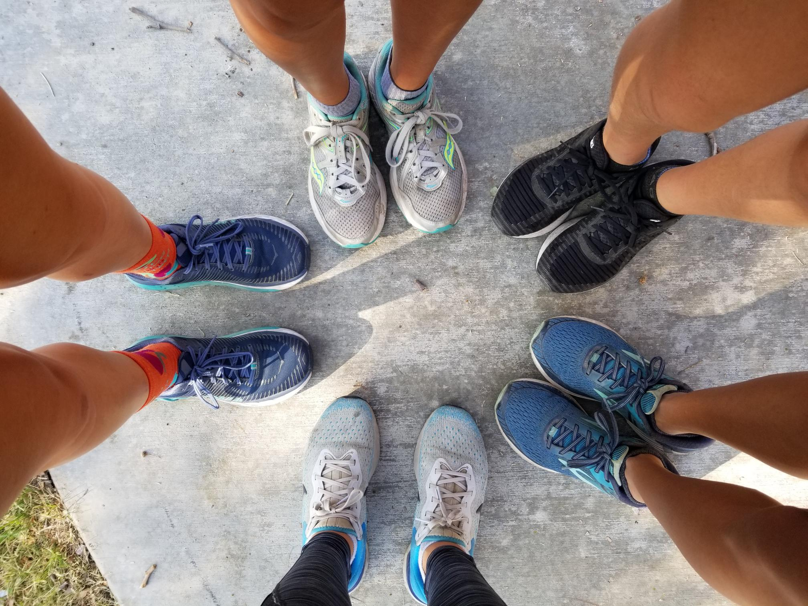
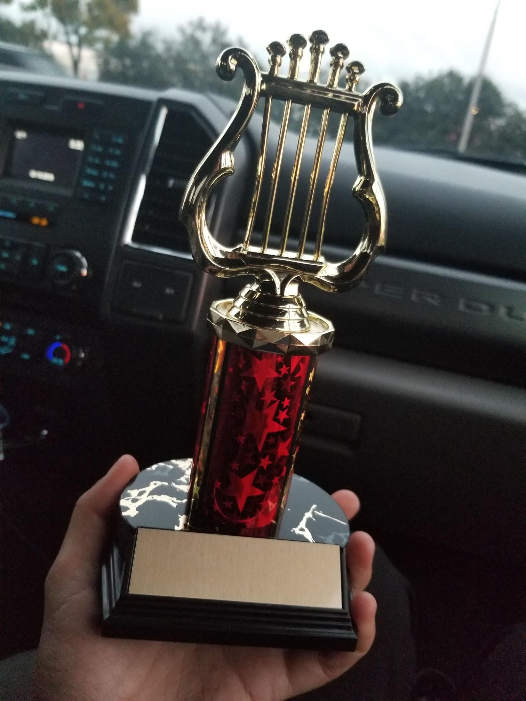

Amber likes to run with her Cross Country and Track and Field Team.
In Cross Country, she and her teammates won 1st in LA City Finals for Varisty Girls
and competed at the State competition.

She also plays violin, both as a soloist and in an orchestra.
Amber started playing violin when she was 9, inspired by her grandmother, a professional violinist.
As a soloist, she has competed in a few competitions.
Colburn String Orchestra, and, currently, the CSUN Youth Philharmonic, conducted under Dr. Roscigno.
She is also currently working with a small ensemble at CSUN to raise money for the food pantry.